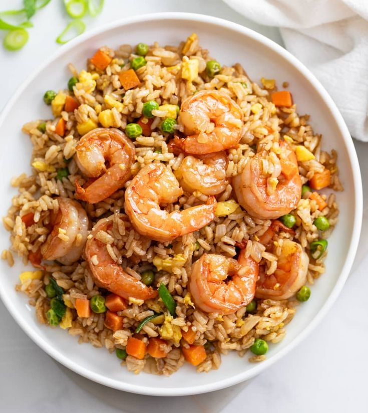

Easy Shrimp Fried Rice

Easy homemade shrimp fried rice with peas, carrots, garlic, and green onions. All my kids love this dish!
Make restaurant-worthy shrimp fried rice with this top-rated recipe.
Ingredients
Cook's Notes:
- Oils: This shrimp fried rice recipe starts with a mix of olive oil and sesame oil.
- Shrimp: A pound of peeled and deveined shrimp should be enough to make four servings.
- Frozen vegetables: Frozen peas, frozen carrots, and frozen corn add color and nutrients.
- Garlic: Take the flavor up a notch with two cloves of garlic (or more, to taste).
- Eggs: You’ll need three lightly beaten eggs for this shrimp fried rice recipe.
- Rice: This quick dinner is a great use for leftover rice.
- Green onions: Thinly sliced green onions lend a pop of bold color and flavor.
- Soy sauce: Low-sodium soy sauce is essential for flavorful fried rice.
- Seasonings: Season this shrimp fried rice recipe with salt and pepper before serving.
Now... Ingredients!
- 2 tablespoons sesame oil
- 2 tablespoons olive oil
- 1 pound uncooked medium shrimp, peeled and deveined
- 1 cup frozen peas and carrots
- ½ cup frozen corn
- 2 cloves garlic, finely minced, or more to taste
- 3 large eggs, lightly beaten
- 4 cups cooked rice
- 3 tablespoons thinly sliced green onions
- 3 tablespoons low-sodium soy sauce, or more to taste
- ½ teaspoon salt, or to taste
- ½ teaspoon freshly ground black pepper, or to taste
Steps
You’ll find the full, step-by-step recipe below — but here’s a brief overview of what you can expect when you make
homemade shrimp fried rice:
- Cook the shrimp in oil, then remove from the pan and set aside.
- Add the frozen vegetables to the skillet and cook until they begin to soften.
- Add the garlic and cook until fragrant, then push the veggies to one side of the skillet.
- Scramble the eggs on the other side.
- Stir the shrimp, rice, and green onions into the skillet.
- Stir in the soy sauce and seasonings, then cook until the shrimp is reheated.
Home